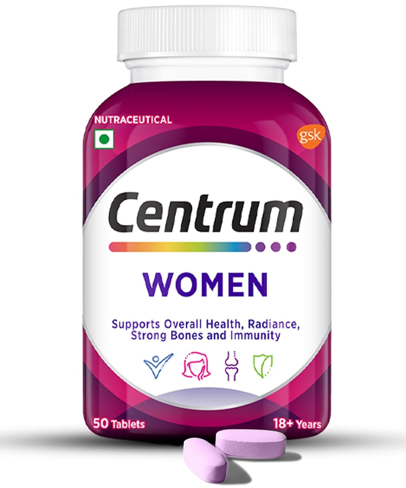
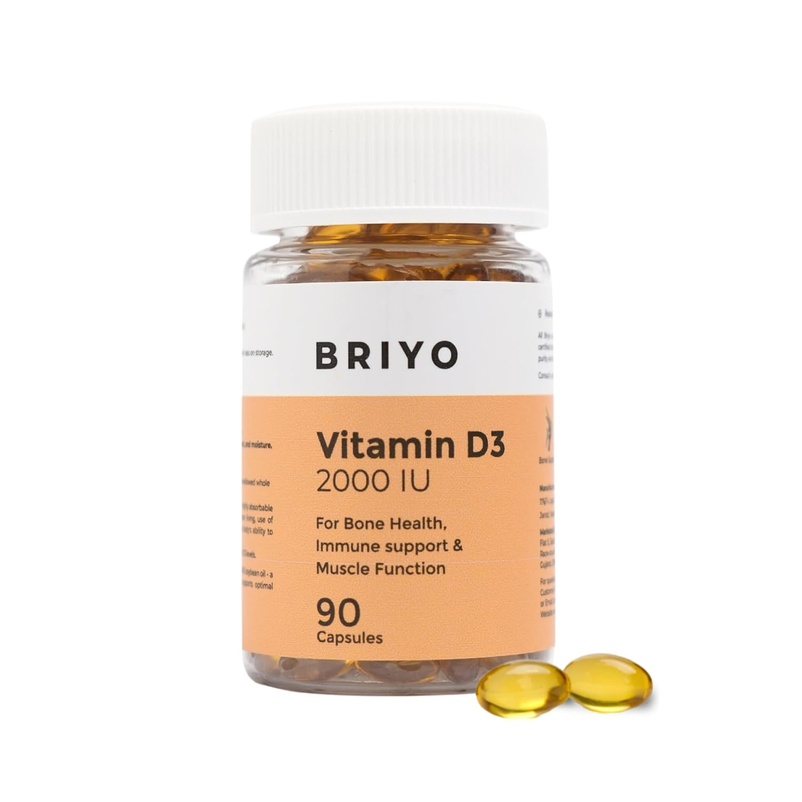

TL;DR
- Designed for adults 60+ with focus on the areas that decline most with age
- Gentle, well-tolerated forms chosen over high-dose or harsh alternatives
- Covers: bone density, cognitive function, immunity, joint mobility, gut health
- Always check with a doctor before starting — especially with existing medications
- Environmental hacks included — indoor air and water matter more as we age
Why This Protocol
Ageing brings specific nutrient gaps and physiological changes. Absorption declines, bone density falls, muscle mass decreases, and immune response weakens. This protocol directly addresses those changes with gentle, effective supplements chosen for tolerability and evidence. Individual needs vary — use this as a starting point with your doctor.
📷 Exercise for elderly — my Instagram postCore Supplements

Centrum Multivitamin
Covers all essential micronutrients in one — formulated for older adult needs

Vitamin D3 + K2
Bone density, immunity, mood — D3 deficiency is near-universal in elderly adults in India
Calcium + Magnesium
Bone matrix support — works synergistically with D3; magnesium aids absorption and sleep
Omega-3 Fish Oil
Heart health, brain protection, inflammation — critical for cardiovascular ageing
B12 (Methylcobalamin)
B12 absorption via intrinsic factor declines significantly with age — nerve and brain health
Collagen Peptides
Joint cartilage, skin elasticity, and bone matrix — collagen production drops 1% per year after 25
Probiotics (Multi-Strain)
Gut microbiome diversity declines with age — immune modulation, digestion, inflammation
Coenzyme Q10 (Ubiquinol)
Mitochondrial energy — CoQ10 declines with age and statin use; heart and energy support
Environmental Hacks
HEPA Air Purifier
Older lungs are more vulnerable to indoor pollution — reduces respiratory strain
Water Filter
Kidneys become less efficient with age — reducing chlorine and heavy metal load helps
YouTube Videos